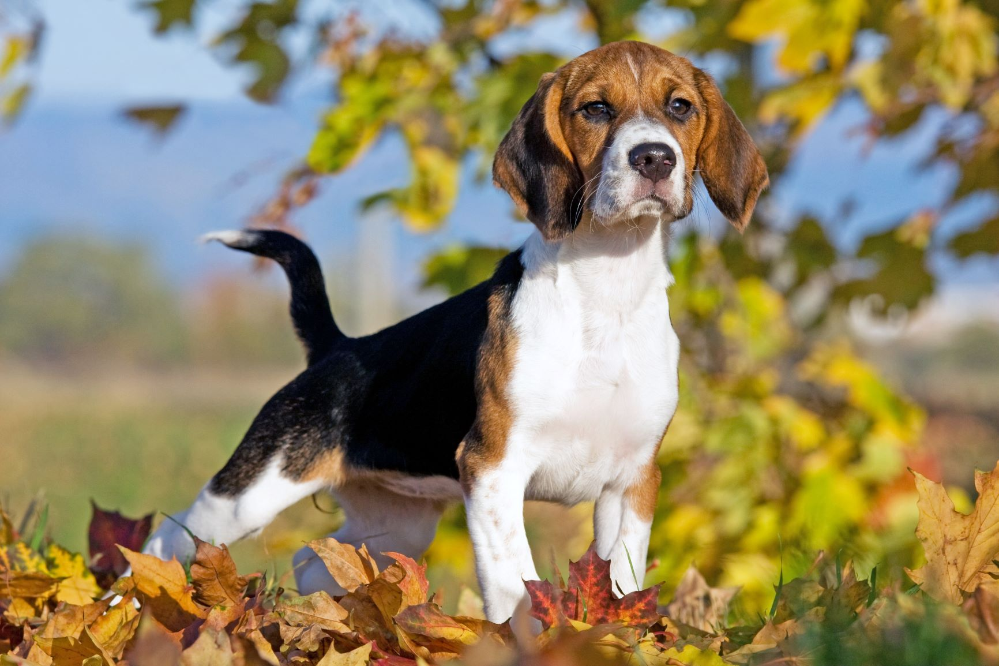

Beagle
Weight
30kg
Coat
High length
Color
Black
The walk from Monterosso to Riomaggiore will take you approximately two hours, give or take an hour depending on the weather conditions and your physical shape.The walk from Monterosso to Riomaggiore will take you approximately two hours, give or take an hour depending on the weather conditions and your physical shapeThe walk from Monterosso to Riomaggiore will take you approximately two hours, give or take an hour depending on the weather conditions and your physical shapeThe walk from Monterosso to Riomaggiore will take you approximately two hours, give or take an hour depending on the weather conditions and your physical shape